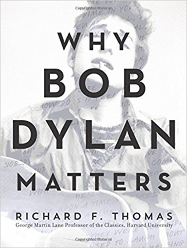

.
- Title: Why Bob Dylan Matters
- Author: Richard Thomas
- Price: $16.50
- Reviews
Add to Cart
Add to Wishlist
Add to Cart
Add to Wishlist
Synopsis:
When the Nobel Prize for Literature was awarded to Bob Dylan in 2016, a debate raged. Some celebrated, while many others questioned the choice. How could the world’s most prestigious book prize be awarded to a famously cantankerous singer-songwriter who wouldn’t even deign to attend the medal ceremony?
In Why Bob Dylan Matters, Harvard Professor Richard F. Thomas answers this question with magisterial erudition. A world expert on Classical poetry, Thomas was initially ridiculed by his colleagues for teaching a course on Bob Dylan alongside his traditional seminars on Homer, Virgil, and Ovid. Dylan’s Nobel Prize brought him vindication, and he immediately found himself thrust into the spotlight as a leading academic voice in all matters Dylanological. Today, through his wildly popular Dylan seminar—affectionately dubbed "Dylan 101"—Thomas is introducing a new generation of fans and scholars to the revered bard’s work.